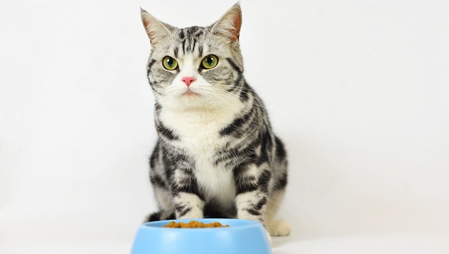
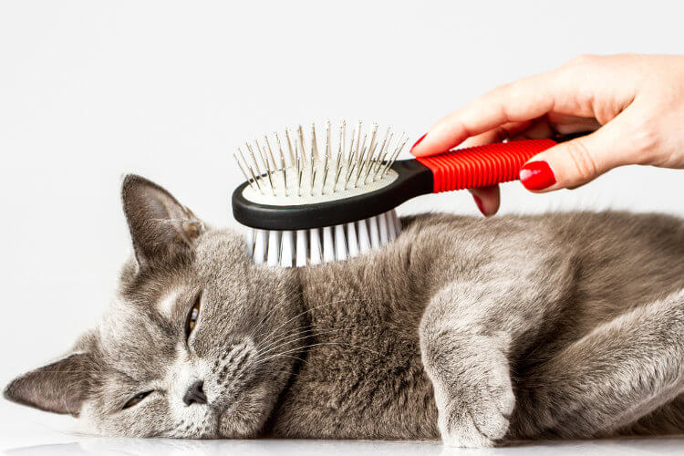

یکی از بزرگترین نگرانیهای ما وقتی تصمیم به نگهداری گربه در منزل میگیریم، سلامتی گربه و اینه که اگر مریض بشه یا به هر دلیلی تلف بشه، چقدر ناراحت میشیم. حتی بسیاری از افراد با اینکه مراقبت از گربه یا سگ رو خیلی دوست دارن، بخاطر این ترس بزرگ از این کار منصرف میشن.
برای نگهداری از گربه در خانه لازمه از یه سری نکات که درواقع فوت و فن این کار به حساب میان، آگاه باشیم تا چیزی سلامت گربهمون رو تهدید نکنه.
خیالت راحت ما این راهو بلدیم و اگه میخواین یه گربه سالم و شاد داشته باشین، این نکات ضروری رو از دست ندین.
۱. تربیت گربه و اطلاعات مهم از نگهداری گربه در خانه
همیشه به صاحبان گربهها میگم که اولین قدم برای تضمین سلامتی گربه اون ها، اطلاعات درست و صحیح و اهمیت دادن بهشه. وقتی شما به اندازه کافی به گربتون اهمیت میدین و در مورد بهترین روش نگهداری از گربه، بیماریهای گربه و … تحقیق میکنید پس میتونید امیدوار باشید که به بهترین شک از گربه ملوستون مراقبت خواهید کرد.
هرچقدر در مورد مراقبت از گربه اطلاعات بیشتری داشته باشین بهتر میتونید ازش مراقبت کنید. بنابراین لازمه قبل از اینکه گربه بیارید به همه این مسائل توجه کنید و بعد آگاهانه اقدام به نگهداری ازش بکنید.
هزینه نگهداری گربه خانگی چقدره؟
شاید این مهمترین سوالی باشه که خیلی از افراد از خودشون میپرسن. هزینه نگهداری گربه تا حد زیادی به خودِ شما بستگی داره؛ اینکه چقدر میخواید براش هزینه کنید؛ غذای خارجی یا ایرانی میخرید یا اصلا خودتون میخواید براش غذا بپزید! کارهایی مثل حمام کردن و کوتاه کردن ناخنها رو خودتون میتونید انجام بدید یا هربار میخواید پیش دامپزشک ببریدش؟ اهل خرید اسباب بازی های گرون برای گربهتون هستید یا ترجیح میدید با خلاقیت براش اسباب بازیهای هیجان انگیز بسازید و …. در کل سقف هزینهها به نحوه نگهداری از گربه برمیگرده.
اما به طور کلی در شش ماه اول زندگی گربه که نیاز به واکسیناسیون و ویزیت مرتب دامپزشک هست ماهانه ۲۰۰-۳۰۰ تومان لازمه هزینه کنید. اما بعد از ۶ ماهگی تا آخر عمر گربه هزینهها بسیار کمتر میشه و شاید ۱۰۰-۲۰۰ تومان کافی باشه. بازم میگیم که این قیمت نیازهای ضروری گربه رو شامل میشه و مواردی مثل غذای گربه تاثیر زیادی در میانگین هزینهها داره.
البته هزینههایی مثل عقیمسازی، بیمار شدن گربه و عمل جراحی و … رو که شاید یکبار در کل زندگی گربه پیش بیاد هم باید در نظر بگیرید.
نگهداری گربه ها با هم چه مزایا و معایبی دارد؟
- کسانی که خیلی عاشق گربه هستن ممکنه دوست داشته باشن بیش از یک گربه داشته باشن. گربهها سر و صدای خاصی ندارن و اگه شما شرایط نگهداری گربه رو بدونین، به راحتی میشه چندتا گربه رو تو آپارتمان نگهداری کرد.
- یکی از مزایای این کار اینه که گربهها همبازی دارن و با هم دیگه بازی میکنن و کمتر بیحوصله و افسرده میشن.
- شاید تنها ایراد این کار بالا رفتن هزینههای نگهداری از گربه باشه. هزینه غذا، خاک گربه، ویزیت دامپزشک و هزینههای درمان در مواقع بیماری به همون نسبت بیشتر میشه و باید به این موضوع توجه کنید.
تربیت گربه و مزایای اون
تربیت گربه یکی از بهترین روشها برای ساده کردن نگهداری از اوناست. وقتی شما اطلاعات کافی در مورد بازیهای مختلف و انواع روشهای تربیتی و نگهداری اون بدونید، نگهداری از این حیوون نه تنها کار دشواری نخواهد بود، بلکه فوق العاده براتون لذتبخش میشه.
اگر بلد نیستید گربه رو تربیت کنید، باید بگم حق دارید چون اصلا کار راحتی نیست. البته خیالتون راحت ما این راهو بلدیم و برای کسانی که سلامت و خوشحال نگه داشتن گربه براشون مهمه، یه ایبوک جامع تدوین کردیم که هم نگهداری از گربه و تمامی نکات ظریفش رو آموزش میده و هم بهتون یاد میده چطور یه گربه شاد و حرف گوش کن تربیت کنید🐾.
خیلی مختصر و مفید بگم، ما توی این ایبوک میخوایم یادتون بدیم چطوری گربه بی تفاوت و حرف گوش نکن تون رو تبدیل به گربه ای مودب و باتربیت کنید و ازش به خوبی مراقبت کنید جوری که هیج وقت مریض نشه🤩 یه سری بازی هم آموزش دادیم که با پیشی جان انجام بدین تا کیفش کوک بشه و دعا به جون تیم پت پُرس کنه 😺
نگهداری گربه برای کودکان
ارتباط با حیوانات شکلی خاص از محبت و مهربونی رو به بچهها یاد میده که در آینده از اونا آدم بهتری میسازه. به همین دلیل خیلی از پدر و مادرا تصمیم میگیرن برای بچههاشون یه حیوون خانگی مثل گربه بیارن تا با نگهداری ازش مسئولیتپذیری رو هم یاد بگیره. گربه خانگی مرتب واکسیناسیون میشه و خورد و خوراکش هم کاملا تحت کنترل ماست، بنابراین مشکلی از نظر بیماری و خطر سلامتی برای شما و فرزندتان نخواهد داشت و در این صورت شرایط نگهداری از حیوون به بهترین شکل پیش میره.
اما اگه میخواید این کارو بکنید حتما به فرزندتون طرز صحیح مراقبت از گربه رو یاد بدید تا خدای نکرده از روی ناآگاهی صدمهای به گربه نزنه باید آموزش نگهداری گربه رو بهش یاد بدین. علاوه بر اون پیشنهاد میکنیم مقاله بهترین نژادهای گربه رو مطالعه کنید و نژادی که آرومتر و مهربونتر هست رو برای کودکتان انتخاب کنید.

۲. غذای گربه، مهم ترین فاکتور موثر در نگهداری گربه
گربهها انرژی و مواد مورد نیاز بدنشون رو از غذایی که میخورن تامین میکنن. به همین دلیل دقیقا مانند ما انسان ها، غذای گربه هم نقش مهمی در سلامتی شون ایفا میکنه و خیلی مهمه که بهترین غذای گربه رو بهشون بدین.
عادتهای غذا خوردن گربهها تفاوتهای زیادی با سگ و حیوانات دیگه داره. گربه ها در طبیعت شکارچی و گوشتخوار اجباری هستن و غذای مورد علاقشون که پرندگان و حیوانات کوچک، بخصوص موش هست رو شکار میکنن.
بهتون پیشنهاد میکنیم حتما با خوندن مطلب غذای گربه چیست اطلاعات کاملی از تغذیه حیوون خونگیتون پیدا کنین تا بتونین همیشه بهترین گزینهها رو برای رژیم غذایی اون انتخاب کنین.
غذای خشک یا غذای خانگی؟
هر دو غذا میتونه برای گربه شما مناسب باشه و این بیشتر به سلیقه خودش برمیگرده و این که شما دوست دارین چقدر برای غذاش وقت بذارین. بعضیها برای نگهداری از گربه در خانه گزینه غذای خشک رو انتخاب میکنن که انواع مختلفی هم داره. برخی نیز به سراغ غذای خانگی میرن.
تو مقوله مراقبت از گربه شناخت نیازهای غذایی اون خیلی مهمه. اگه غذای خشک به گربهتون میدین باید آب بیشتری در دسترسش بذارین. برای آشنایی با انواع غذاهای خشک و برندهای معتبر در ایران، به این مقاله مراجعه کنید: غذای خشک گربه.
اگه غذای خانگی براش درست میکنین باید بالانس شده باشه. هر میزان که مواد غذایی کم یا زیاد بشن، میتونه در دراز مدت سلامت گربهتون رو به خطر بندازه. برای این کار میتونین از برنامه غذایی گربه پت پرس که دامپزشکان براساس ویژگیهای گربه شما تهیه میکنن، استفاده کنین.

ویژگیهای ظرف آب گربه
آبی که گربه به نوشیدنش تمایل نشون میده باید چند ویژگی داشته باشه:
- تمیز باشه
- تازه باشه
- از محل غذا خوردنش دور باشه
۳. نگهداری از گربه خانگی با واکسیناسیون و درمان انگلی از ۲ ماهگی
زدن واکسن گربه ها از حدود ۲ ماهگی شروع میشه. واکسن هاری گربه بعد از تزریق اول، سالیانه و واکسن چند گانه بعد از تزریق اول و دوم (۱ ماه بعد) سالیانه باید تکرار بشه. (مطلب مرتبط: هاری گربه)
واکسن گربه میتونه از ابتلای گربه شما به چند بیماری خطرناک گربه سانان، پیشگیری کنه. قرص ضد انگل گربهها که اونها رو از برخی انگلهای گوارشی پاک میکنه، بسته به تشخیص دامپزشک دادن قرص ضد انگل به بچه گربهها میتونه از ۳ هفتگی شروع شده و ادامه پیدا کنه.

۴. تاثیر فضای نگهداری و بازی در نشاط روانی گربه
گربهها حیوانات بسیار دوست داشتنی و مستقلی هستن و نگهداری از این حیوون در مقایسه با سگ، خیلی راحته. اونا نیاز ندارن هر روز به پیاده روی برن تا انرژیشون تخلیه بشه. خودشون با خودشون بازی میکنن و وقتی خسته شدن یه چرت طولانی میزنن!
طبق گفته thesprucepets، سلامت روان گربهها وقتی تضمین میشه که شما مواردی که در ادامه میاد رو رعایت کنین.
فضای نگهداری گربه خانگی
نیازی نیست حتما خیلی بزرگ باشه و به همین دلیل گربه برای نگهداری در آپارتمان و خونههای کوچیک مناسبه. گربهها مادامی که یه جای امن و گرم و راحت و غذای کافی داشته باشن میتونن زندگی خوبی داشته باشن. گربههایی که زیاد دستی و خونگی نشدن رو هم میشه در حیاطی امن نگهداری کرد؛ اما موقعی که هوا سرد میشه باید یه گوشه گرم براش فراهم کنید.
شرایط نگهداری از گربه در آپارتمان
برای نگهداری گربه در آپارتمان شما باید به چند مورد دقت کنین. یکی این که گربه قراره با خانواده زندگی کنه یا نه و دیگه این که جای نگهداریش کجاست. یعنی قراره همیشه تو خونه باشه یا با فضای آزاد هم در ارتباطه. اینطوری مراقبت از گربه راحتتر میشه.
اما چون معمولاً گربهها به داشتن یه کنج امن علاقهمندن و ترجیح میدن اونجا رو حفظ کنن، و به خاطر بی سروصدا بودن، نگهداریشون تو آپارتمان آسونه. فقط کافیه وسایل مورد نیازش رو فراهم کنین.

نگهداری از گربه در حیاط
نگهداری گربه خیابانی در صورت رعایت نکات بهداشتی میتونه یکی از بهترین تجربههای شما باشه. چون اونا با گربههای غریبه در ارتباطن و محیط زندگیشون با گربههای خانگی فرق داره، باید حواستون باشه که نشونههای بیماریهای پوستی و گوارشی رو جدی بگیرین. یکی از شرطهای مهم نگهداری از گربه در حیاط اینه که واکسنشون رو بزنین و قرصهای انگلشون رو بدین. اینجوری احتمال انتقال بیماری و مریض شدن خود گربه رو هم به حداقل میرسونین.
اهمیت بازی در نگهداری از گربه خانگی
اینکه نگهداری گربه به نسبت راحته به این معنی نیست که برای شاداب موندن اونها هیچ کاری از دست شما برنمیاد. شما میتونین با فراهم آوردن وسایل بازی برای اونها و تشویقشون به بازی و فعالیت گربهای، خوشحالترشون کنین. حتی گربه پرشین که به خوابالو بودن معروفه، با داشتن صاحبی که برای بازی باهاش اشتیاق نشون میده، کمتر میخوابه. یه گربه فعال یه گربه سالمه.
برخی از بازیهایی که میتونین با گربه انجام بدین ایناس:
- براش قلاب ماهیگیری بخرید و تشویقش کنید اسباب بازی سر قلاب رو بگیره. اگر تمایلی نشون نمیداد، به اسباب بازی گربه کمی اسپری کت نیپ بزنید
- غذا و تشویقی گربه رو داخل توپ اسنک بریزین تا با قل دادنش سعی کنه اونا رو بیرون بیاره و بخوره
- با لیزر گربه باهاش بازی کنین و اون رو روی زمین و دیوار حرکت بدین تا تلاش کنه بگیرتش
- براش پاکت های بزرگی که خش خش میکنن قرار بدین و وقتی رفت داخلش وانمود کنین شیءای روزی دیواره پاکت در حال حرکته
در مقاله اسباببازی گربه در مورد انواع اسباب بازی که برای گربه مناسب هست و راهنمای انتخاب بهترین وسایل بازی برای گربه و طرز بازی کردن باهاشون صحبت کردیم.
۵. توجه به سلامت پوست و مو در نگهداری گربه
با اینکه گربهها خودشون عادت دارن با لیس زدن به بهداشت پوست و موشون رسیدگی کنن ولی گاهی به کمک ما نیاز پیدا میکنن.
برای نگهداری درست از گربه، توجه به سلامت پوست و موی گربه بخصوص گربههای موبلند مثل گربه پرشین، خیلی مهمه.
در نگهداری از گربه پرشین برای حفظ زیبایی موهای زیبا و ابریشمین اش، نیاز داره روزی ۲ بار برس زده بشه، وگرنه موهاش گره میخورن و در هم فرو میرن یا به اصطلاح نمدی میشن. پوست ناحیه ای از موها که نمدی شده در معرض هوا قرار نمیگیره و مستعد عفونت های پوستی و ریزش موی گربه میشه.
اما این امر در مورد گربههای موکوتاه راحتتره و مثلا در نگهداری از گربه اسکاتیش یا DSH لازم نیست زمان زیادی رو برای برس زدن اختصاص بدید.
در صورتی که متوجه شدین ریزش موی گربه شما زیاد شده یا موهای ناحیهای از بدنش ریخته، سریعا به کلینیک دامپزشکی مراجعه کنین.
در ضمن گربهها موجوداتی تمیز و وسواسی هستن و با کمک بزاق دهانشون که میکروبکش هست خودشون رو تمیز میکنن و نیازی ندارن زیاد حمام بشن. سالی ۱ الی ۲ بار حمام کردن بخصوص برای یه گربه خانگی کفایت میکنه. برای آشنایی با روش درست حمام بردن گربه و نحوه شستوشوی اون، این مطلب رو بخونید: حمام کردن گربه.

۶. ظرف خاک و اطلاعاتی که میتونه درباره سلامتی گربه به ما بده
یکی از مواردی که صاحبان گربه ها کمتر جدی میگیرنش ظرف خاک و خاک گربه و اطلاعاتی که به ما میده هست. در ادامه متوجه میشین که چه اطلاعات مهمی میتونین درباره سلامتی گربهتون از ظرف خاکش به دست بیارین.
چه اطلاعاتی رو میشه از ظرف خاک گربه به دست آورد؟
از جمله حساسترین و آسیبپذیرترین قسمتهای بدن گربهها، دستگاه اداری و گوارشی اونهاست. ادرار و مدفوع گربه، محصول کار کردن این دوتا دستگاه هستن. پس اگر میخواین عملکرد این دو قسمت رو تحت نظر بگیرین، به خاک و ظرف خاک گربه تون توجه کنین.
چطور بیشترین و دقیق ترین اطلاعات رو از ظرف خاک گربهمون به دست بیاریم؟
برای این کار، باید به صورت روزانه و سر ساعتی مشخص، ظرف خاک رو نظافت کنین. چرا ساعت مشخص؟
چون قراره بتونین اطلاعات رو با روز قبلش مقایسه کنین.
به حجم گلولههای خاک که نشوندهنده حجم ادرار هست و البته تعداد اونها دقت کنین.
۲ تا ۴ بار دفع ادرار در ۲۴ ساعت برای گربه ها طبیعیه. بسته به اینکه گربه چقدر آب میخوره، این حجم و تعداد متفاوت هستن ولی تغییر ناگهانی در اون ها و زیاد شدن یا کم شدنشون بخصوص اگر ادامه دار باشه، زنگ خطره و بهتره به دامپزشک مراجعه کنین.
مدفوع گربه در حالت طبیعی قهوه ای رنگ هست و قوامش باید نه شل و نه سفت بلکه خمیری باشه. گربه ها باید قادر باشن بدون هیچ مشکلی دفع مدفوع انجام بدن.
هر تغییری در رنگ، قوام یا میزان مدفوع گربتون مشاهده کردین، با دامپزشک تماس بگیرین. توجه به ظرف خاک رو در مورد نگهداری از گربه خانگی جدی بگیریم.
۷. مراجعه منظم به کلینیک دامپزشکی و چکاپ
مراجعه مرتب به کلینیک دامپزشکی حتی وقتی گربه شما کاملا سالم به نظر میرسه، میتونه از ابتلا به تعداد زیادی بیماری گربه پیشگیری کنه. چرا؟ دلیلش ساده است.
بسیاری از بیماری ها در ابتدای شروع شدنشون بدون علامت هستن (بیماری های قلبی، کلیوی و …) ولی دامپزشک میتونه با معاینه بالینی و انجام چند تست ساده از وجودشون مطلع بشه و در مراحل اولیه وقتی که بهبودی بسیار سریع انجام پذیره، درمان رو شروع کنه.
به خصوص در مورد مواردی مثل انواع حساسیتهای رایج در گربهها مثل حساسیتهای چشمی که منجر به عفونت چشم میشه و ما نباید ساده ازش رد بشیم، لازمه که طی چکاپهای دورهای این موارد رو بررسی کنیم. نشانههای حساسیت و بیماریهای چشمی رو اینجا بخونید: عفونت چشم گربه.
پس حداقل سالی ۲ بار گربتون رو به یک کلینیک دامپزشکی حرفه ای ببرید و حداقل سالی یک مرتبه چکاپ کامل براش انجام بدین. موقع چکاپ توجه کنین که دامپزشک همه قسمت های بدن رو بررسی کنه. اگر دامپزشک در اطرافتون نیست، میتونید از دامپزشک آنلاین پت پرس هم کمک بگیرید.


۸. عقیم سازی، راهی برای سلامتی یا نقض حقوق گربهها؟
در جواب سوال چگونه از گربه نگهداری کنیم یه مقوله بسیار اساسی مطرح میشه که نقش خیلی مهمی در سرپرستی داره و اونم عقیم کردن گربههاست. موضوعی که خیلی چالشبرانگیزه. در مطلب عقیم سازی گربه ما مفصل به اهمیت عقیم کردن، تاثیراتش بر سلامتی و دلایل اخلاقی اون پرداختیم و اینجا لازمه اشاره کنیم که سگ و گربه هایی که ما در منزل ازشون نگهداری میکنیم، بخصوص وقتی تنها هستن، نمیتونن فعالیت جنسی عادی خودشون رو داشته باشن.
برای همین داشتن این غریزه براشون بیهوده است و باعث اذیت شدن خود اون حیوان و صاحبش میشه. بسیاری از شکایت هایی که به ما دامپزشک ها میشه، ناشی از نشون دادن رفتارهای جنسی سگ و گربههای عقیم نشده هست. فراموش نکنید که نگهداری از گربه عقیم شده بسیار راحتتر و بیدردسرتره و گربه طبعی آروم پیدا میکنه.
از طرف دیگه، بسیاری از بیماریهای دستگاه تولید مثل، فقط برای حیوانات عقیم نشدهای که سنشون بالا میره، اتفاق میافتن. با عقیم سازی از بسیاری از بیماری های گربه (سرطان پستان، بزرگ شدن پروستات، عفونت رحم و …) که احتمال بروزشون خیلی زیاده، پیشگیری میشه.
۹. در چه مواقعی گربهها به مراقبت بیشتری نیاز دارند؟
گربهای که تغذیه سالم داشته باشه و به طور مرتب توسط دامپزشک ویزیت بشه کمتر دچار بیماری میشه. اما به هرحال هر گربهای در طول عمرش ممکنه چندبار بیمار بشه و حتی به دلایل مختلف نیاز به عمل جراحی داشته باشه. در این مواقع وظیفه ماست تا با مراقبت ازش روند بهبودی و درمان رو سریعتر کنیم. همینطور در نگهداری گربه ماده عقیم نشده در دوران بارداری و بعد از زایمان هم باید به نکات خاصی توجه کنید.
نگهداری گربه باردار
- دوران بارداری گربه بین ۵۸-۶۷ روز طول میکشه و تغییرات زیادی در بدن گربه ماده به وجود میاد.
- گربه باردار نیاز به غذای بیشتری داره و رژیم غذاییش باید کالری بیشتری داشته باشه؛ هرچی باشه گربه مادر الان داره چند تا توله کوچولوی تو شکمشو هم سیر میکنه! غذای بچه گربه به خاطر دارار بودن کالری و پروتئین بالا گزینه مناسبی به نظر میرسه.
- گربه ماده نیاز به استراحت زیادی داره و در طبیعت هم به خاطر پیدا کردن غذا مجبوره فعالیت کنه. پس بهتره جای خواب گرم و راحتی در مکانی آرام و ساکت براش تهیه کنید و همییشه غذا و آب تازه هم در اختیارش قرار بدید تا آرامش داشته باشه.
- در اواخر دوران بارداری مکانی رو برای زایمان و نگهداری از گربه ماده و تولهها در نظر بگیرید. این مکان باید جایی گرم، ساکت و آرام و به دور از مزاحمت و رفت و آمد زیاد باشه.
نگهداری گربه خانگی بعد از زایمان
- گربه مادر در روند زایمان و بعدش کاملا مستقل و مسلط عمل میکنه و لازم ننیست شما زیادی انجام بدید. فقط باید مراقبش باشید که هرموقع نیاز به کمک داشت در کنارش باشید.
- مهمترین مساله توجه به تغذیه گربه شیرده هست. گربهها معمولا بین ۴ تا ۶ توله به دنیا میارن و دو ماه هم به اونا شیر میدن. به همین دلیل باید تغذیه بسیار خوبی داشته باشن تا از پس شیر دادن به این همه بچه بربیان. غذای حاوی پروتئین و کالری بالا و دسترسی به آب تازه توصیه میشه.
- از طرفی گربه ماده و همینطور تولهها بعد از زایمان نیاز به خواب و استراحت دارن و باید فضایی آرام و ساکت براشون فراهم کنید.
برای اینکه درباره زایمان گربهها بیشتر بدونین، پیشنهاد میکنم مقاله زایمان گربه رو مطالعه کنین. ما توی این مقاله به صورت دقیق درباره نشانه های نزدیکی زایمان گربه و رفتارهای خاص گربه موقع زایمان توضیح دادیم.
چطور از بچه گربه نگهداری کنیم؟
مراقبت از گربه بالغ با بچه گربه تفاوتهایی داره که بهتره هر سرپرستی ازش آگاه باشه. طبیعتاً دمای مناسب، غذا، فضای خواب، باکس دستشویی و خیلی از شرایط دیگه در این رابطه فرق دارن.
علاوه بر اون بچه گربهها حساسیتهای خاص گوارشی و ایمنی بدن رو دارن که باید مرتب چک بشن تا هر چه زودتر بشه از آسیبهای جدی پیشگیری کرد. ما این نکات رو قبلاً براتون جمعآوری کردیم: نگهداری از بچه گربه.
نگهداری گربه در خانه بعد از عمل
- اگر گربهتون به هردلیل مجبور شد تحت عمل جراحی قرار بگیره لازمه مراقبتهای زیر رو براش انجام بدید:
- اگه گربهتون بیهوشی کامل داشته معمولا چندین ساعت و حتی یه روز طول میکشه تا از گیجی و منگی دربیاد. تو این مدت لازمه براش محیطی آروم و ساکت فراهم کنید تا با خیال راحت بخوابه و استراحت کنه. به طور کلی استراحت میتونه روند درمان و بهبودی گربه رو سریعتر کنه.
- داروهایی که دکتر براش تجویز میکنه رو سر ساعت و طبق دوز مشخص به گربهتون بدید.
- نکته مهم اینه که نذارید گربه بخیههاش رو بجوه یا بکشه. در مورد عمل غقیم سازی و عملهای مشابه میتونید با بستن گردنبند الیزابت دور گردن گربه از جویدن بخیهها جلوگیری کنید.
- در مدت نقاهت بعد از عمل ممکنه اشتهای گربهتون کم بشه یا خیلی حال و حوصله جویدن غذای خشک نداشته باشه. غذای کنسروی یا غذای خونگی آبدار (مرغ آبپز و سبزیجات خرد شده) که نیاز به جویدن ندارن و مقوی هم هستن گزیننه بسیار خوبی هست.
- اگه لازمه بخیههاش تمیز بشه یا پانسمانش عوض بشه این کار رو طبق دستور دامپزشک و به موقع انجام بدید.

سوالات رایج درباره مراقبت از گربه خانگی
برخی از نکات دیگهای هم که باید برای مراقبت از گربه بدونین، در زیر براتون آوردیم.
چه وسایلی برای گربه لازم است؟
در کل گربهها به یه سری وسایل اصلی و یه سری وسایل فرعی نیاز دارن. اصلیها رو باید از قبل به سرپرستی گرفتن تهیه کنین و فرعیها رو میتونین بخرین، میتونین هم نخرین. لیست این وسایل رو اینجا براتون آوردیم: وسایل گربه.
نگهداری از گربه نر و ماده کنار هم سخته؟
درواقع بهترین گزینه میتونه همین باشه به شرطی که شرایط عقیم شدن یا نشدنشون رو لحاظ کنین.
اما میشه که شما فقط گربههای نر یا فقط ماده رو کنار هم داشته باشین اما باید حواستون به نحوه معرفی و دوست کردنشون با هم و قلمروطلبیهاشون باشه. معمولاً مراقبت از گربه ماده نسبت به گربه نر گزینه بهتریه چون گربه نر احتمال فرار به خاطر همین مسئله قلمروطلبی و نیازهای جنسی و اثبات قدرتش به گربههای محل بیشتره.
برای همین باید مسئله تربیت گربه و شرایط نگهداریاش رو جدی گرفت.
نگهداری گربه راحت تره یا سگ؟
معمولاً میگن که مراقبت از گربه راحتتره چون میزان وابستگی سگ و نیاز به تخلیه انرژی رو نداره اما بازم بستگی به سبک زندگی شما و نوع شخصیت گربهتون داره.
سخن آخر؛ انجام اقدامات مهم در جهت نگهداری گربه
شاید فکر کنین کسی هست که این ۹ قدم رو برای مراقبت از گربهاش انجام نده؟ باید بگیم که بله. خیلی از گربهها به خاطر رعایت نشدن همین نکات ساده، دچار آسیب میشن. برای همین خیلی مهمه که سرپرستها در نگهداری از گربه، حواسشون به رعایت این نکات باشه.


سلام مطالب عالی بود من گربه پرشین دارم چون کنکوری هستم یک ماه توی پانسیونه و گفتن تا امتحان برش نمیگردونن و تا امتحانم ۳ ماه مونده میترسم افسردگی بگیره ممنون میشم کمکم کنید
سلام ممنون ازراهنماییتون من یک بچه گربه دوماهه دارم سه روزه مدفوع نکرده علتش چیه ومن بایدچیکارکنم
سلام دوست عزیز،
بسته به نوع تغذیش میتونه دچار یبوست یا مشکلات دیگه شده باشه. پیشنهاد میکنم برای بررسی بیشتر مراحل ثبت مشاوره ی آنلاینو انجام بدین تا دقیق تر بررسی و پاسخ داده بشه:
مشاوره دامپزشکی آنلاین حیوانات خانگی- سوال مستقیم و تخصصی از دامپزشک پت پرس
سلام، من یه گربه دارم که الان داره میره تو سه سال که باهم زندگی میکنیم.عقیم شده، خونگی هم هست، جنسیتش هم نره.تمام معاینات و واکسن هاش هم به موقع انجام میشه تقریبا.فقط سوالی که دارم خیلی مشتاقه بره بیرون تو حیاط یا پارکینگ، حتی بلده درو باز کنه اگر قفل نکنیم.کلی هم اسباب بازی داره و کلی هم خودم باهاش بازی میکنم اما علاقه خاصی به بیرون رفتن داره.هرچند به محض دیدن یه غریبه هم سریع برمیگرده داخل خونه.دلیل اصرار به بیرون رفتنش با توجه به اینکه عقیم هست چی میتونه باشه؟
سلام گربه ها کلا کنجکاو هستن و این طبیعت گربه هاست ولی خب نباید بزارید بره بیرون
سلام ما یه گربه داریم خونگیه امروز یه موش از حیاط پشتی شکار کرد کشتش أورد تا بالای راه پله انداخت! خون ازش نیومده نمی دونم چجوری کشت ولی این خطرناک نیست؟
چکار کنیم موش نگیره؟!
سلام این کار رو گربه ها برای قدردانی از کسی که بهشون غذا میده انجام میدن (هدیه دادن)
اگر میخوان موش نگیره باید مانع بیرون رفتنش بشید
درسته ممنون از جوابتون
ولی من سوالم اینه که خطری نداره این کار از نظر بیماری برای خودش و ما؟
خب دیگه نزارید بره بیرون
سلام
من یه گربه پرشین گرفتم و روی پوستش یه چنتا خال گوشتی داره ، می خواستم بدونم که یه وقت مریضیه خاصی نباشه
سلام دوست عزیز نمیتونیم نظری بدیم تا موقعی که عکسش رو ندیدیم و تاریخچه ای ازش نداریم
سلام خسته نباشید
یه بچه گربه ای که از شیر گرفته شده پیدا کردم می خواستم توی خونه ازش نگهداری کنم برای اولین بار، خواستم ببینم گربه ها بیماری مشترک با انسان دارند؟ یا اینکه در کل این حیوون ضرری برای انسان داره؟ مقالتونم خوندم ولی نظرتون هم به عنوان یک پزشک برام مهمه
ممنون از شما
سلام
بله دارند ولی بیماری خطرناکی ندارن.
به عنوان دامپزشک و کسی که سال ها خودم گربه داشتم و روزانه با گربه های مختلفی هم سر و کار دارم تا به حال دچار مشکل نشدم و در همکارانم هم چیزی ندیدم. برای همین خودتون حساب کنید که ریسکش کم هست.
سلام
اطلاعاتتون خیلی خوب بودن ولی اینکه میگین شستن گربه سالی ۱ یا ۲ بار کافیه ب نظر درست نمیاد چون من یه جا خوندم که باید گربه های خونگیو هر ۱۰ تا ۱۵ روز یه بار شست وگرنه شپش میگیرن این مدتی که شما میگین خیلی زیاد نیست؟
سلام دوست عزیز خیر گرفتن شپش ربطی به میزان شستشو نداره سالی یک بار یا دوبار کفایت میکنه، برخلاف پوست ما انسان ها پوست گربه ها قدد چربی و عرق نداره و ممکن برا ثر شستشوی زیاد پوستوموشون خشک بشه و بیماری های مختلفی مثل حساسیت ها خارش و … بشن شپش هم یک بیماری مسری هست و خیلی به ندرت در گربه دیده میشه و هیچ ربطی به میزان شستشو نداره
سلام. روزتون بخیر. میخواستم ازتون بپرسم که میشه به بچه گربه (که دیگه شیر نمیخوره) محلول اب و پودر جوانه گندم داد؟ براش ضرری نداره؟ یه بچه گربه خیابونیه که هر چند وقت یکبار میبینمش و نمیتونم براش غذای مخصوص گربه تهیه کنم.
اگر راهنماییم کنید ممنون میشم.
سلام دوست عزیز خیر این چیزی که گفتید رو نمیشه به گربه داد. سینه مرغ و سیب زمینی و هویج پخته بدون نمک و ادویه و روغن بهش بدید.
سلام ممنون از توضیحات کاملتون.من قصد آوردن گربه دارم ولی هنوز تو انتخاب نژاد مناسب شک دارم.بیشتر انواع مو کوتاه یا عروسکی پرشین رو دوست دارم ولی جایی خوندم که بیماری های زیادی در کمینشونه.ممنون میشم راهنماییم کنید که یه نژاد به زیبایی و آرومی پرشین بگیرم ولی کمتر مریض بشه.
سلام ممنون بابت راهنمایی های خوبتون من درمنزل نگهداری نمیکنم حدود یک ماه هست که منظم به یک بچه گربه و مادرش در نزدیکی مون غذا میدم،میخواستم ببینم ازاونجا که نگهداری اختصاصی ندارم چه کمکی میتونم برای سالم موندنشون بهشون بکنم؟ غذاهای مناسب شون چه موادی هست و چه شرایطی باید داشته باشه؟ من بیشتر مرغ و ماهی و شیر دادم بهشون البته از نان دانمارکی هم خیلی خوششون میاد ولی میترسم براشون ضرر داشته باشه میشه راهنمایی کنین تشکر
سلام دوست عزیز
غذای خشک مخصوص گربه استفاده کنید خیلی بهتره چون غذای کاملی هست، اگه براتون مقدور نیست کمی سینه مرغ پخته شده به همراه مقداری سیب زمینی و هویچ اب پز بدون نمک و روغن. نون دانمارکی هم ندید.
ممنون از محبت تون غذای خشک رو از کجا باید تهیه کنم کلینیک حیوانات خانگی دارند؟
سلام دوست عزیز
کلینیک های دام پزشکی یا پت شارپ ها دارن، البته تعدادشون زیاد نیست میتونید از دیجیکالا سفارش بدید، لینکش توی متن هست آنلاین سفارش بدن هرجای ایران باشید براتون میفرستن
شیر کم چرب ماست بدون لاکتوز خوب هستند؟ میوه نمیشه بهشون داد؟
سلام دوست عزیز
ماست کم چرب خوبه ولی کافی نیست. میوه خیر
بازم ممنون از پاسخگویی تون
خواهش میکنم
ممنونم بابت توضیحات خیلی خوبتون عالی بود